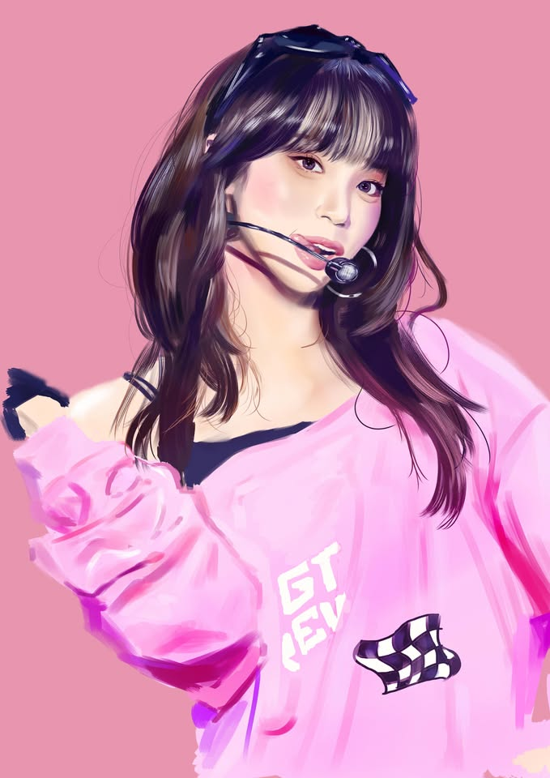
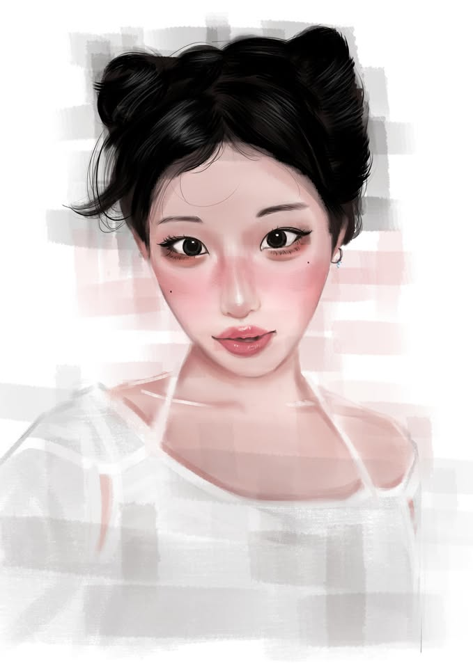
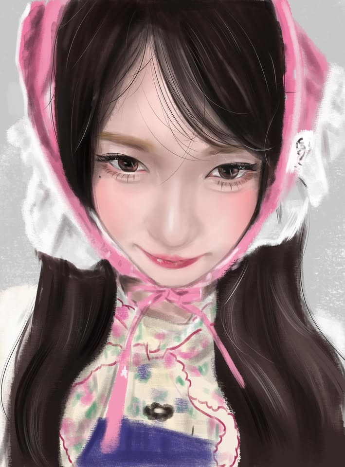
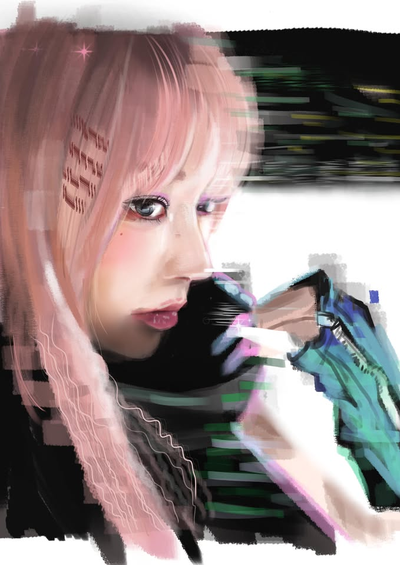
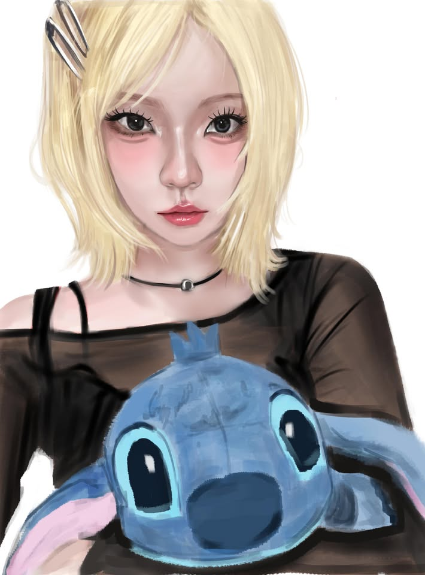
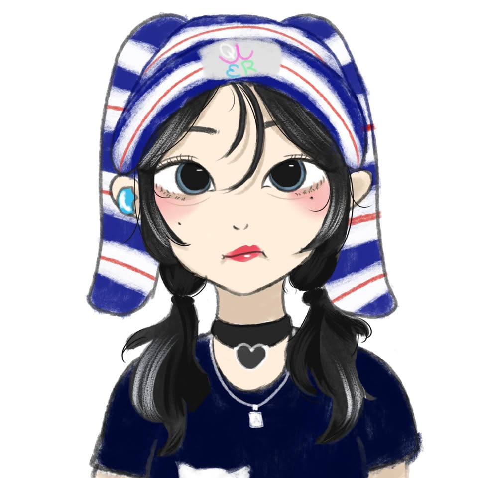
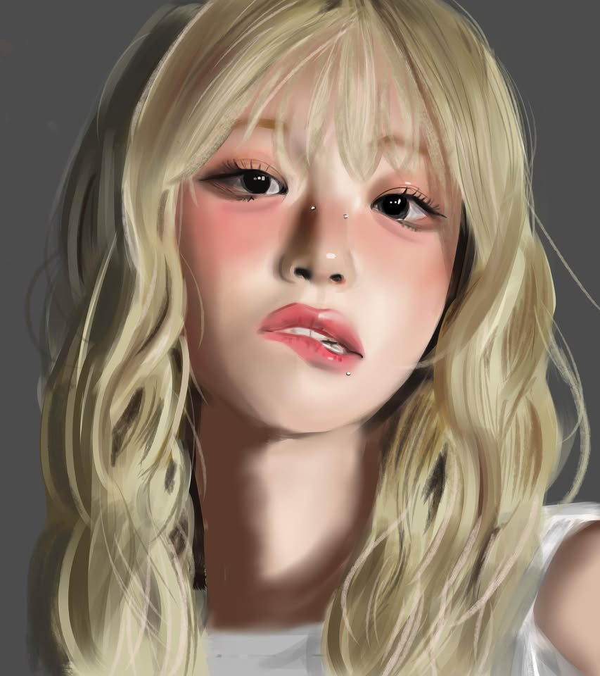
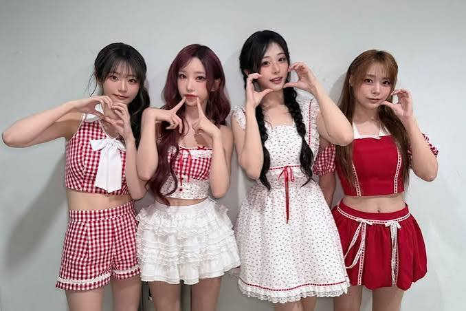

DRAWN WITH FEELING · 01 / 04SCROLL TO EXPLORE01 — 04
01 / THE PERSON BEHIND THE PAGE

A portrait, in soft colors.HELLO, NICE TO MEET YOU
我是裕翔，
喜歡用畫畫
記下心動的瞬間。
平常喜歡電繪，也喜歡認識新的音樂與團體。這個小小的頁面，放著我正在創作、正在喜歡的事物。歡迎慢慢看。
黃裕翔ILLUSTRATION · MUSIC · LITTLE JOYS
02 / MADE ON MY SCREEN
SELECTED WORKS · 05電繪作品.
每一張畫，都是一次練習
如何更靠近心裡的畫面。





一筆一畫，慢慢長成自己的樣子。
03 / ON REPEAT, IN MY HEART
A GROUP I LOVE
喜歡的
團體.
BAD DEAR
喜歡她們在舞台上的樣子，也喜歡每一次聽歌時，心情被點亮的感覺。
FAN MOMENT · ALWAYS ON MY PLAYLIST
A MOMENT TO KEEP / BAD DEAR04 / A SOUNDTRACK FOR MY DAY
NOW PLAYING IN MY HEART
喜歡的
音樂.
ON REPEAT
BAD DEAR OST
一段旋律，留住喜歡的心情。